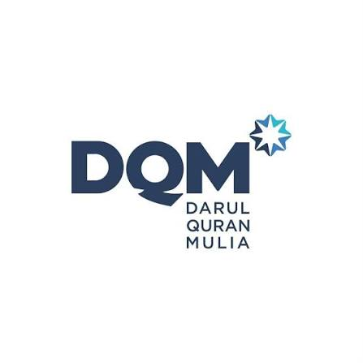

Darul Quran Mulia (DQM) berfokus pada pengembangan akademik komprehensif (literasi, numerasi, dan Bahasa Inggris standar internasional) berbasis Kurikulum Merdeka serta pembelajaran ilmu agama yang terakreditasi oleh Universitas Islam Madinah dan Universitas Al-Azhar, Mesir. DQM menggunakan sistem pembelajaran terpadu berbasis teknologi (iPad, Smart Classroom, dan Smart Card) untuk memastikan peserta didik memiliki kemampuan akademik dan ilmu pengetahuan agama yang unggul untuk bersaing di tingkat global.
DQM menerapkan pengajaran Al-Qur'an secara mendalam: membaca, menghafal, memahami, dan mengamalkan. DQM telah berhasil mencetak lebih dari 1.000 hafizh Al-Qur'an 30 juz yang tersebar di perguruan tinggi terbaik dalam dan luar negeri.
DQM mengembangkan soft skill 4C (communication, critical thinking, creativity, & collaboration), dipadukan dengan pengembangan akhlak dalam bentuk pembiasaan ibadah wajib dan sunnah sesuai Al-Qur'an dan Hadits, serta implementasi nilai-nilai Islam yang rahmatan lil alamin. DQM mendorong siswa untuk menjadi pribadi Islami, mandiri, berpikir kritis, dan komunikatif. Dengan pendekatan ini, lulusan diharapkan menjadi pemimpin berkarakter yang dapat berkontribusi positif dalam membangun masyarakat madani yang harmonis dan berkeadaban.
Visi Pendidikan
"Menjadi lembaga dakwah dan pendidikan islam yang unggul dalam membentuk masyarakat yang sholih menuju kemajuan ummat dan bangsa."Misi Pembinaan